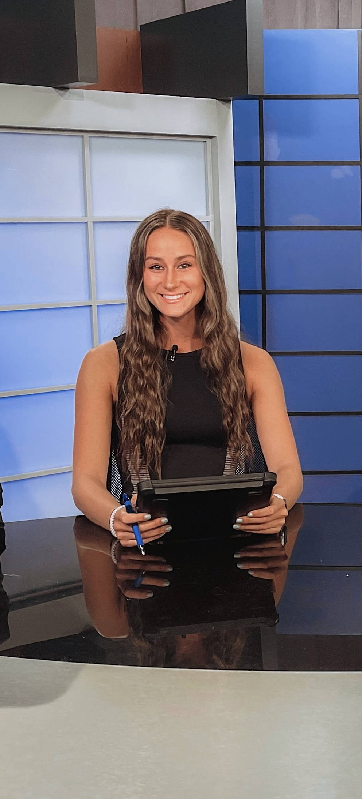

Student Journalist
I cover UMD sports through video and storytelling as well as anchor in weekly shows. I also write script and report play-by-plays, top plays, game statistics, game recaps, and draft watchlists as well as actively tweet play-by-plays in real time for the organization's twitter account. I create gamer packages following each game including standup and press conference clips.
I cover weekly news and feature stories on the University of Maryland community. I also pitch ideas for the following cycle.
I edit and fact check content submitted by staff writers for biweekly publication. I also take photographs for my personal published articles.
I organize events and panels in support of the advancement of women in sports media and promote and increase diversity in sports media.
I covered the 21st Maccabiah in Israel through video and storytelling. I created packages, gamers, and feature stories daily, as well as conducting interviews with members of Maccabi. I have experience in color-commentating, sideline reporting, and working with camera equipment. I also created social media content on Tiktok, Instagram and Twitter.
I promote diversity, equity and inclusion within my chapter through meaningful programs and events such as podcast discussions and movie nights. I educate my chapter on the importance of world issues through necessary discussions.